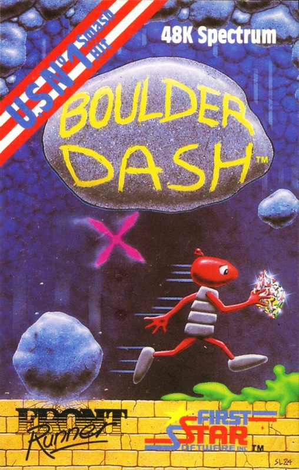
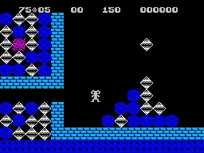
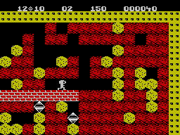

Boulder Dash


{kind=link}

| Publisher: | Front Runner |
| Price: | £7.95 |
| Year: | 1984 |
| Source: | CRASH, Issue 12 |

Front Runner, the software marketing organisation of K-Tel, has here released an American program which has been converted for the Spectrum. It was originally a big hit in the States for First Star for the Atari. It is also a very unusual game, that relies on a simple concept with complex ramifications.

You play the starring role of Rockford, a gem collector in a series of 16 underground caverns, lettered A to P. You can elect to play from caves A, E, I or M on difficulty levels 1 to 3, or from A only on levels 4 and 5. Difficulty reflects on the number of jewels to be collected and the time limit allowed.
The basic game play is not unlike those ‘Digger’ games where you burrow through the earth dropping boulders on nasties, but that puts it all too simply. There are a great many combinations available between all the screens which uses elements of boulders, earth which can be removed, gems and several types of nasty which chase you. Removing the earth from under a boulder will cause it to fall down, but one boulder stacked on top of another will also topple off, so you must take great care, and of course this immediately adds a strategic element to the game. On one screen you have to create space for an amoeba to grow, then release a load of butterflies from a lower portion of the cave which turn to gem stones when they meet the amoebae — the problem being that the butterflies kill Rockford. This gives a simple example of what the game is like.
Each cave is several times larger than the screen playing area and the screen automatically scrolls to keep pace with Rockford as he moves about, shovelling earth and moving boulders. Additionally there are four short interactive puzzles which you are entitled to play after completing caves D, H, L and P.
CRITICISM

‘What a strange game this is at first, with no obvious connection to anything else I’ve ever seen. The idea is totally and completely original — a weird sense of strategy, forward planning and arcade skill are the qualities needed to play this game. If you don’t possess one of these skills, then forget it. I found Boulder Dash immensely enjoyable, not because of its originality and weird sense of humour, but because of its compulsive playing ideas. It’s a long time since I’ve played a game as absorbing as this. You tend to get obsessed with it. Graphics are different, to say the least, bright and detailed. Sound is continuous, with plenty of spot effects. An incredibly addictive game and well worth buying. Brill!’
‘Boulder Dash is aptly named! At first sight it looks like a number of other digging games and the graphics don’t immediately strike you as extra special. Playing the game convinces otherwise. Within minutes I was sucked into it and hours went by. Boulder Dash is a brilliant program with a mean streak a mile wide in it. There is one particular room (“I” I think) which had me working for almost two hours without a break to beat its cruel sense of humour. Basically you release a piece of earth from a hole on top of a large chamber and for the next few seconds gems and boulders cascade down in a very realistic fashion. It is then a case of picking your way round to get at the gems without being squashed by a boulder. Very clever, amazingly, dangerously addictive, Boulder Dash should keep everyone going for ages and ages.’
‘This amazing game is so simple, it’s ridiculous! Yet once started it’s impossible to leave it. Rockford is amusingly animated, tapping his foot in boredom if you keep him standing still for too long, eyes flicking nervously, as well they might with all that weight of stone above his head! The movement of boulders and gems is so logical, when huge stacks of them fall that it can be a joy to watch. With the five skill levels and 16 screens to play through, this game represents value even for the slightly high price, and I can recommend it to anyone. It’s excellent and tremendously compelling to play.’
COMMENTS
| Control keys: | E, O/F, K up/down, M, X/SYM, C left/right, N, V or B to fire, or use the cursors and 0 |
| Joystick: | Kempston, Sinclair 2, Protek, AGF, Fuller |
| Keyboard play: | Responsive, plenty of options |
| Use of colour: | Excellent, very unusual combinations |
| Graphics: | Unusual, generally excellent |
| Sound: | Excellent |
| Skill levels: | 5 |
| Lives: | 3 |
| Screens: | 16 |
| General rating: | Highly addictive and playable, original and good value, highly recommended. |
| Use of computer: | 91% |
| Graphics: | 90% |
| Playability: | 98% |
| Getting started: | 89% |
| Addictive qualities: | 98% |
| Value for money: | 90% |
| Overall: | 93% |